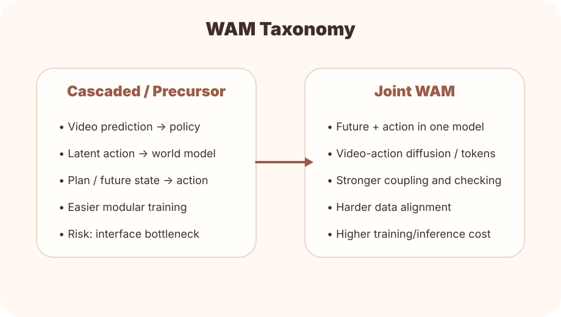

从预测到规划
Dyna、PlaNet、Dreamer 和 MuZero 共同说明：世界模型的价值不在于复原所有像素，而在于支持规划和决策。
WAM 不是突然出现的，而是模型学习、潜变量世界模型、视频生成、VLA 和机器人控制共同演进的结果。

时间线由 data/timeline.json 驱动，后续可以继续加入新节点。
Dyna、PlaNet、Dreamer 和 MuZero 共同说明：世界模型的价值不在于复原所有像素，而在于支持规划和决策。
Genie 和 Sora 等大规模视频世界模型展示了强视觉动态先验，但机器人执行仍需要动作接口。
WAM 将未来预测和动作生成放在同一个联合建模问题中，使未来成为动作的内部约束。